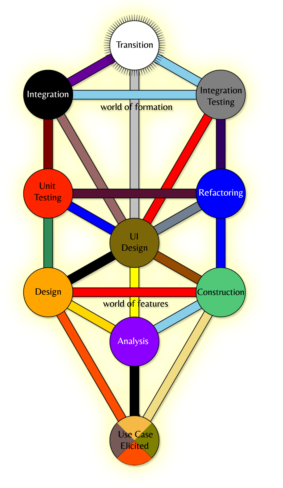

Manifesto for Kabbalah Software Development
As G-d created everything that is destined to come into being through letters, hence we shalt dutifully connect the essence of a business model with its physical form by drawing, hewing, combining and interchanging the symbols of a programming language, using the wisdom of forefathers unveiled in the Tree Of Sefirot and following the Limitless Light in the eternal cycle of the perfect software formation.
